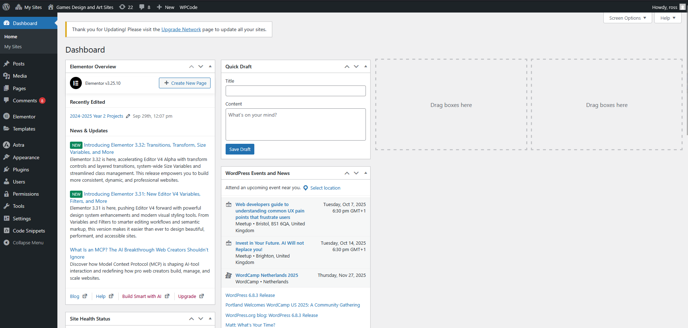
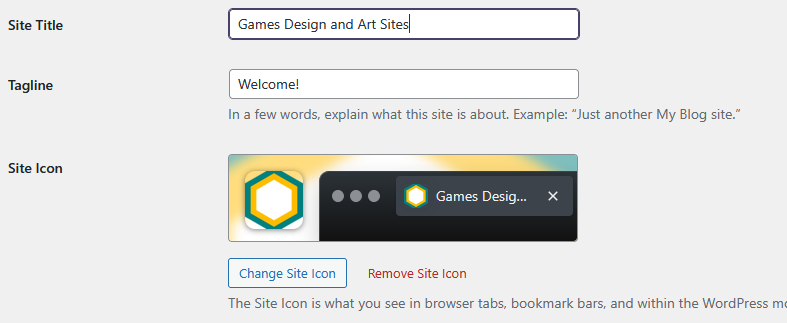
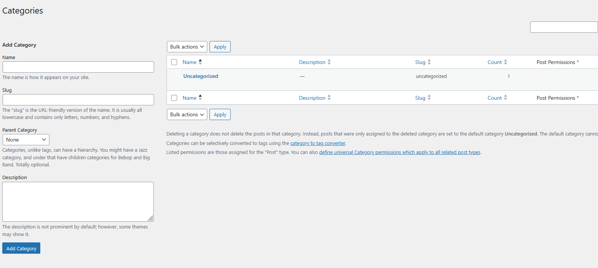

What is WordPress?
WordPress is a free, open-source content management system that allows users to create and manage websites and blogs without needing programming skills. Over 40% of the internet is built on WordPress because it allows anyone to configure a website or blog with hundreds of themes and plugins to choose from.
We at GDA have chosen to use WordPress as the platform of choice for student blogs and portfolios. All second year students are provided with their own personal wordpress site that they should use to document their work throughout the year through a series of organized weekly blog posts. In third year, students have a choice between continuing with their existing site, or starting a new one specifically for third year content. Students may request a new site at any moment, for example for group projects.
WordPress at GDA
sites.wsagames.com
https://sites.wsagames.com/ exists as both a host and an index for student sites. Your site will be hosted on this domain and is usually accessible by appending your username to the end of the URL. For example if your username is ab15g23, your site will be live on https://sites.wsagames.com/ab15g23/
Third Year Projects
Students may request a new site at any moment, for example for group projects. The only exception to this rule applies to Final Year Projects, where your site will be hosted separately under a unique domain (you can find examples of Final Year Project websites here: https://wsagames.com/). You will be walked through the process of purchasing and setting up your own domain as part of your Third Year marketing lectures.
Setting up your WordPress site
You would have been provided a WordPress username and password over email, please check with your technician if you are unsure or would like your password to be reset.
In order to login to your site, append /wp-admin to the end of the URL. For example, if your site is located at https://sites.wsagames.com/ab15g23/, going to https://sites.wsagames.com/ab15g23/wp-admin will take you to the admin dashboard. You will need to use your username and password to log in.
Admin Dashboard

Once logged in, you will be greeted with admin dashboard. Most of the settings and backend tools for your site will be available through this page.
Setting up your profile
If you are accessing WordPress for the first time, it is recommended for you to take a moment to set up your profile before continuing. Hover over the "Users" tab on the left, and then click on "Profile"
Important
The password that you were given is a temporary one. It is strongly recommended for you to change your password.
Profile photos are handled by Gravatar - an external service not related to Wordpress or GDA. If you choose to set up a Gravatar account you will need to use your student email in order for it to be synced with your Wordpress account. It may take some time to update and should be used at your own discretion as Gravatar may display the photo on any other site that uses Gravatar. For this reason we advise against using your real-life likeness.
When you are done, don’t forget to click the “Update Profile” button to save your changes!
Changing your site title and icon
By default the site title is set as your name, if you would like to change this hover over the "Settings" tab and select "General”:  The icon should be a square and at least 512 x 512 pixels in size.
Again, don’t forget to click the “Save Changes” button when done!
Setting up your categories
Before you begin writing your posts, it is recommended for you to think about how you want your posts to be organized. Categories are a great way of doing this, and will allow for you to easily separate your content into specific menus and sections of your site.
For GDA, we recommend creating categories for each aspect of your study. Categories can be nested, allowing for you to define a clear structure for your content. For example:
- Year 2
- Semester 1
- Game Design Document
- Game Overview
- Player Experience
- Core Gameplay
- etc.
- Research
- Weekly Updates
- Personal Development
- Game Design Document
- Semester 2
- …
- Semester 1
- Year 3
- Semester 1
- …
- Semester 2
- …
- Semester 1
NOTE
Third year students who decide to continue with their sites should have a CLEAR separation between their second and third year content.
To setup new categories, hover over the "Posts" tab and select "Categories":

On the left you will see the form used for creating new categories. On the right you will see any existing categories already made. By default all WordPress sites come with an “Uncategorized” category that posts are placed under if no category is specified - this category can not be deleted.
Create any parent categories first, then any sub-categories after.
Slugs
Believe it or not, slug is a technical term for the human-readable part of a URL which identifies a certain page or a section of your site. For example, in www.example.com/how-to-bake-bread, how-to-bake-bread would be the slug that identifies that specific page. If your post is under a category, the category’s slug will be part of the URL that points to your post.
Posts and Pages
Posts vs Pages
Wordpress content comes in two flavors, but what is the difference between the two?
This Blog by Elementor describes the differences in detail:
Hierarchical vs. Static
- Posts: Posts are hierarchical in nature. They are presented in reverse chronological order, with the newest content appearing first.
- Pages: Pages can also be hierarchical, allowing for nested parent-child relationships. However, the primary focus is on creating a clear navigational structure for your website.
Organization
- Posts: Organized primarily using categories and tags, facilitating content discovery based on topics and keywords.
- Pages: Organized within menus (top navigation, sidebar, footer menus) to guide visitors through essential website sections.
Timeliness
- Posts: Designed for timely content with a focus on recency due to their publication dates.
- Pages: Built for content that doesn’t rely on a specific publication date and remains relevant over time.